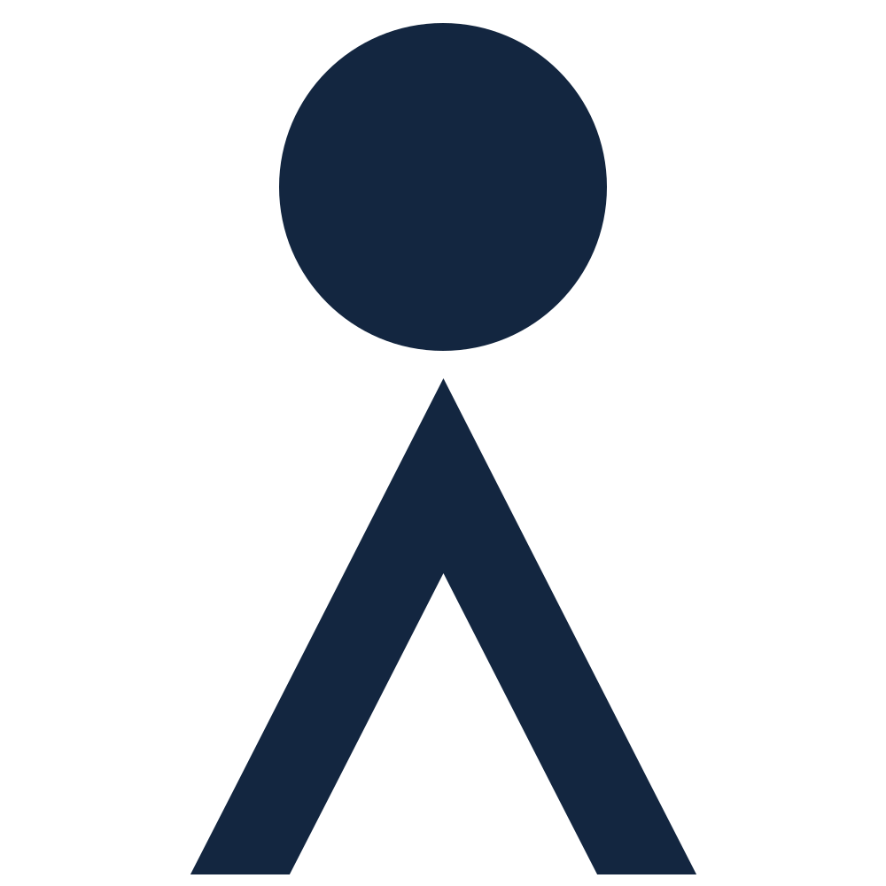

Ocearch
Een bestaande website semantisch nagebouwd met HTML, CSS en JavaScript voor mobiel.
-

5 weken
-
November - December 2023
-

Developer
Goals
Het doel van dit project was om een bestaande website zo semantisch mogelijk na te bouwen. Een belangrijke prioriteit is dat het goed navigeerbaar is met een screenreader, omdat toegankelijkheid een van de belangrijkste punten is tijdens het bouwen van een website.
Technologieën
Ik heb gekozen om 2 verschillende pagina's na te bouwen die beide unieke karakteristieken hebben: de science pagina en de education pagina onder de programs sectie.
De haai
Op de science pagina staat een haai, waar informatieknoppen bovenop zitten die responsive meebewegen. Als je op een van deze knoppen klikt, opent een popup met alle informatie.
index.html
<section>
<h2>12+ samples in 15 minutes</h2>
<div class="shark">
<img src="images/whiteshark.svg" alt="illustration of a white shark with information dots numbered 1 to 10 floating on it">
<ol>
<li>
<button>1</button>
</li>
<li>
<button>2</button>
</li>
<li>
<button>3</button>
</li>
<li>
<button>4</button>
</li>
<li>
<button>5</button>
</li>
<li>
<button>6</button>
</li>
<li>
<button>7</button>
</li>
<li>
<button>8</button>
</li>
<li>
<button>9</button>
</li>
<li>
<button>10</button>
</li>
<li>
<button>11</button>
</li>
<li>
<button>12</button>
</li>
</ol>
</div>
<!-- De nummers boven de haai, hoe zet ik deze in de html? -->
<ol>
<li>
<h3>1. SPOT Tag</h3>
<p>Devices capable of real-time tracking of fine and broad scale movements</p>
<img src="./images/shark_images/01.Spot_Tag.jpg" alt="image of 2 men applying the device to a shark.">
<!-- Knop om af te sluiten -->
<button>
<span class="bar"></span>
<span class="bar"></span>
</button>
</li>
<li>
<h3>2. Blood Samples</h3>
<p>Critical to understanding reproductive statuses of a sharks and stress levels the animals go through during the capture and tagging process.</p>
<img src="./images/shark_images/02.Blood_Draw.jpeg" alt="image of a man inserting a needle into a sharks body to collect their blood.">
<!-- Knop om af te sluiten -->
<button>
<span class="bar"></span>
<span class="bar"></span>
</button>
</li>
<li>
<h3>3. Accelerometer Data-Logger</h3>
<p>Used to record fine-scale swimming behavior including how quickly white sharks recover after tagging.</p>
<img src="./images/shark_images/03.Accelerometer_Tag.jpg" alt="image of multiple men holding the shark and putting the device on his fin.">
<!-- Knop om af te sluiten -->
<button>
<span class="bar"></span>
<span class="bar"></span>
</button>
</li>
<li>
<h3>4. Ultrasound</h3>
<p>Used to assess the reproductive condition and status of females. The equipment includes special goggles enabling visualization even in bright sunlight.</p>
<img src="./images/shark_images/04.Ultrasound.jpg" alt="image of a man applying the device on a sharks body and looking at the visualization.">
<!-- Knop om af te sluiten -->
<button>
<span class="bar"></span>
<span class="bar"></span>
</button>
</li>
<li>
<h3>5. Fin Clip</h3>
<p>Collected to determine the population connectivity (relatedness) and dispersal of white sharks for the development of a population management plan.</p>
<img src="./images/shark_images/05.Fin_Clips.jpg" alt="image of a man applying the fin clip to a shark.">
<!-- Knop om af te sluiten -->
<button>
<span class="bar"></span>
<span class="bar"></span>
</button>
</li>
<li>
<h3>6. Muscle Biopsy</h3>
<p>Help identify critical reproductive habits, examine diet and assess contaminant loads.</p>
<img src="./images/shark_images/06.Muscle_Biopsy.jpg" alt="image of a man performing a muscle biopsy on a shark, inserting a big needle into the shark.">
<!-- Knop om af te sluiten -->
<button>
<span class="bar"></span>
<span class="bar"></span>
</button>
</li>
<li>
<h3>7. Parasite Collection</h3>
<p>Collected from the oral cavity, gills, flanks, and coacal region of the sharks.</p>
<img src="./images/shark_images/07.Parasite_Collection.jpg" alt="image of a close up of a sharks mouth with its teeth visible with a man swabbing its teeth.">
<!-- Knop om af te sluiten -->
<button>
<span class="bar"></span>
<span class="bar"></span>
</button>
</li>
<li>
<h3>8. Body Measurements</h3>
<p>Taken to determine size and compare them to other sharks with the same or different reproductive maturity. Also used in estimating weight and age at maturity.</p>
<img src="./images/shark_images/08.Body_Measurements.jpg" alt="image of multiple men around a shark and measuring it with measuring tape.">
<!-- Knop om af te sluiten -->
<button>
<span class="bar"></span>
<span class="bar"></span>
</button>
</li>
<li>
<h3>9. PSAT Tags</h3>
<p>Non-real-time tag used to track movements and depth/temperature profiles.</p>
<img src="./images/shark_images/09.PSAT_Tag.jpg" alt="image of a shark on a boat and a man in a diving suit sanding behind it.">
<!-- Knop om af te sluiten -->
<button>
<span class="bar"></span>
<span class="bar"></span>
</button>
</li>
<li>
<h3>10. Acoustic Tags</h3>
<p>Small sound-emitting devices that allow for receiver-dependent tracking of sharks in multiple dimensions.</p>
<img src="./images/shark_images/10.Accoustic_Tag.jpeg" alt="image of a man applying the acoustic tag to a shark.">
<!-- Knop om af te sluiten -->
<button>
<span class="bar"></span>
<span class="bar"></span>
</button>
</li>
<li>
<h3>11. Bacteria</h3>
<p>Bacterial samples are taken to study and address the bacterial roles in shark's rapid rate of wound healing and as a novel source for antibiotics.</p>
<img src="./images/shark_images/11.Bacteria.jpg" alt="image of a man taking a bacterial sample of a shark.">
<!-- Knop om af te sluiten -->
<button>
<span class="bar"></span>
<span class="bar"></span>
</button>
</li>
<li>
<h3>12. Semen Sample</h3>
<p>Collected to assess the sperm motility, viability, and morphology of a shark. This not only adds to the health assessment, but also predicts sperm maturation and time for breeding.</p>
<img src="./images/shark_images/12.SemenSample.jpg" alt="image of a man taking a bacterial sample of a shark.">
<!-- Knop om af te sluiten -->
<button>
<span class="bar"></span>
<span class="bar"></span>
</button>
</li>
</ol>
</section>
De haai met de 12 knoppen zit in een div, die puur gebruikt is voor het positioneren van de knoppen. Met calc zijn de knoppen gepositioneerd op de haai en de informatie wordt aangeroepen via JavaScript.
science.css
/* //// */
/* SECTION 3 MET DE HAAI */
/* //// */
/* div met de haai, waarin de li'tjes zich bevinden */
.shark {
position: relative;
}
/* de knoppen algemeen op de haai */
.shark ol li{
display: flex;
justify-content: center;
align-items: center;
position: absolute;
width:1.5em;
box-shadow: none;
overflow-x: visible;
}
/* individuele plekken van de knoppen tot 12 */
.shark li:first-of-type {
top: calc(13% - .75em);
left: calc(52% - .75em);
}
.shark li:first-of-type button {
animation-delay: .2s;
}
.shark li:nth-of-type(2) {
top: calc(50% - .75em);
left: calc(16% - .75em);
}
.shark li:nth-of-type(2) button {
animation-delay: 2s;
}
.shark li:nth-of-type(3) {
top: calc(28% - .75em);
left: calc(60% - .75em);
}
.shark li:nth-of-type(3) button {
animation-delay: 1s;
}
.shark li:nth-of-type(4) {
top: calc(67% - .75em);
left: calc(52% - .75em);
}
.shark li:nth-of-type(4) button {
animation-delay: 1.5s;
}
.shark li:nth-of-type(5) {
top: calc(28% - .75em);
left: calc(40% - .75em);
}
.shark li:nth-of-type(5) button {
animation-delay: 2.5s;
}
.shark li:nth-of-type(6) {
top: calc(45% - .75em);
left: calc(65% - .75em);
}
.shark li:nth-of-type(6) button {
animation-delay: .5s;
}
.shark li:nth-of-type(7) {
top: calc(53% - .75em);
left: calc(90% - .75em);
}
.shark li:nth-of-type(7) button {
animation-delay: 1.2s;
}
.shark li:nth-of-type(8) {
top: calc(46% - .75em);
left: calc(43% - .75em);
}
.shark li:nth-of-type(8) button {
animation-delay: 2.8s;
}
.shark li:nth-of-type(9) {
top: calc(48% - .75em);
left: calc(53% - .75em);
}
.shark li:nth-of-type(9) button {
animation-delay: 2.2s;
}
.shark li:nth-of-type(10) {
top: calc(71% - .75em);
left: calc(66% - .75em);
}
.shark li:nth-of-type(10) button {
animation-delay: .7s;
}
.shark li:nth-of-type(11) {
top: calc(50% - .75em);
left: calc(80% - .75em);
}
.shark li:nth-of-type(11) button {
animation-delay: 2.9s;
}
.shark li:nth-of-type(12) {
top: calc(61% - .75em);
left: calc(34% - .75em);
}
.shark li:nth-of-type(12) button {
animation-delay: 1.4s;
}
.shark button {
background-color: var(--button-color);
color: var(--text-color);
border: none;
font-size: .7em;
animation: sharkButtons 3s infinite;
}
shark.js
// EERSTE LI //
const eersteButton = document.querySelector(".shark li:first-of-type button");
const deEersteLi = document.querySelector("main section:nth-of-type(3) > ol li:nth-of-type(1)");
const deEersteSluitButton = document.querySelector("main section:nth-of-type(3) > ol li:nth-of-type(1) button");
eersteButton.onclick = toonEersteLi;
deEersteSluitButton.onclick = sluitEersteLi;
function toonEersteLi() {
deEersteLi.classList.add("inBeeld");
}
function sluitEersteLi() {
deEersteLi.classList.remove("inBeeld");
}
Kleurmodes
In het menu zijn er verschillende modes die het kleurschema van de website veranderen, zoals dark mode, light mode en systeem volgend. Een extra modus is christmas mode waarin de knoppen en de haai kerstdecoratie hebben.
index.html
<p>Filters</p>
<fieldset>
<legend>Color mode</legend>
<input type="radio" id="system-mode" name="color-mode" value="system-mode" checked>
<label for="system-mode">System</label>
<input type="radio" id="light-mode" name="color-mode" value="light-mode">
<label for="light-mode">Light</label>
<input type="radio" id="dark-mode" name="color-mode" value="dark-mode">
<label for="dark-mode">Dark</label>
<input type="radio" id="christmas-mode" name="color-mode" value="christmas-mode">
<label for="christmas-mode">Christmas</label>
</fieldset>
color_mode.js
// de default colorMode opzoeken
// dat is value van de checked radio button in de html
var colorMode = document.querySelector("header nav input:checked").value;
// de default systeem voorkeuren bepalen
// true of false
var systemLightMode = window.matchMedia("(prefers-color-scheme: light)").matches;
// de radio buttons
const colorModeInputs = document.querySelectorAll("header nav [type='radio']");
/********************************/
/* bij het openen van de pagina */
/********************************/
// als de colorMode opgeslagen is in localstorage
// de radio buttons en :root initialiseren op basis van de opgeslagen colorMode
if( localStorage.getItem("colorMode") ) {
// de colorMode ophalen
colorMode = JSON.parse(localStorage.getItem("colorMode"));
// de bijbehorende radio button opzoeken en aanzetten
let selectedRadioButton = document.querySelector("#"+colorMode);
selectedRadioButton.checked = true;
// :root updaten
updateColorModeOnRoot();
}
/**********************************************/
/* als een van de radio buttons wordt gekozen */
/**********************************************/
colorModeInputs.forEach(colorModeInput => {
colorModeInput.addEventListener('change', radioChecked);
});
function radioChecked() {
// de gekozen optie bepalen
let checkedColorMode = this.value;
// de gekozen optie opslaan in localstorage
localStorage.setItem("colorMode", JSON.stringify(checkedColorMode));
// global var setten
colorMode = checkedColorMode;
// :root updaten
updateColorModeOnRoot();
applyChristmasStylesToButtons();
// Update snowflakes based on the selected color mode
var snowFlakes = document.querySelector("header nav #snow-bg");
// var penguin = document.querySelector("#penguin");
if (colorMode === "christmas-mode") {
snowFlakes.classList.add("inBeeld");
applyChristmasStylesToButtons();
updateSharkImage();
} else {
snowFlakes.classList.remove("inBeeld");
updateSharkImage(); // zodat de afbeelding ook bij andere color modes terug verandert
}
}
/******************************************************************/
/* als de system prefers-color-scheme of prefers-contrast wijzigt */
/******************************************************************/
window.matchMedia("(prefers-color-scheme: light)").addEventListener('change', (event) => {
// de nieuwe waarde opslaan
systemLightMode = event.matches; // true or false
// :root updaten
updateColorModeOnRoot();
});
/****************************************/
/* data-color-mode van de :root updaten */
/****************************************/
var snowFlakes = document.querySelector("header nav #snow-bg");
function updateColorModeOnRoot() {
// als licht of dark gekozen is
if (colorMode == "light-mode" || colorMode == "dark-mode" || colorMode == "christmas-mode") {
document.documentElement.dataset.colorMode = colorMode;
}
// als system is gekozen
// bepalen welke system optie relevant is
else {
// als light mode is gekozen
if (colorMode == "christmas-mode") {
document.documentElement.dataset.colorMode = "christmas-mode";
console.log("heyyyyyy!");
}
else if (systemLightMode) {
document.documentElement.dataset.colorMode = "light-mode";
}
// anders blijft dark mode over
else {
document.documentElement.dataset.colorMode = "dark-mode";
}
}
}
function updateSharkImage() {
var sharkImage = document.querySelector('.shark > img');
if (!sharkImage) {
console.error("Error: Shark image element not found.");
return;
}
var colorMode = document.documentElement.dataset.colorMode;
if (colorMode === "christmas-mode") {
sharkImage.src = "./images/whiteshark_christmas.webp";
} else {
sharkImage.src = "./images/whiteshark.svg";
}
console.log("Updated shark image:", sharkImage.src);
}
function applyChristmasStylesToButtons() {
const buttons = document.querySelectorAll('main a.button');
// verwijder christmas-mode van buttons
buttons.forEach(button => {
button.classList.remove('christmas-button');
});
// alleen als de mode christmas-mode is, voeg de classlist toe
if (colorMode === "christmas-mode") {
buttons.forEach(button => {
button.classList.add('christmas-button');
});
}
}
Via JavaScript wordt gekeken naar systeemstatus, dus wat de gebruikers als modus gebruiken. Via de knoppen in het menu kunnen ze handmatig de modus wisselen. De functie updateColorModeOnRoot() blijft continu kijken welke modus er gekozen is.
Slideshow
De slideshow is in de html een simpele ul met buttons in een section, wat de container van de slider is.
index.html
<section>
<!-- de container / slider -->
<ul>
<!-- de individuele slide -->
<li>
<img src="./images/Science_slider/scienceslider_01.jpeg" alt="image of...">
</li>
<li>
<img src="./images/Science_slider/scienceslider_02.jpeg" alt="image of...">
</li>
<li>
<img src="./images/Science_slider/scienceslider_03.jpeg" alt="image of...">
</li>
<li>
<img src="./images/Science_slider/scienceslider_04.jpeg" alt="image of...">
</li>
</ul>
<button>❯</button>
<button>❮</button>
</section>
Via Javascript komt er telkens een andere li in beeld, terwijl de andere li uit beeld gaat met transform translateX.
slideshow.js
const slides = document.querySelectorAll("main section:nth-of-type(5) ul li");
let currentSlide = 0;
function showSlide(index) {
slides.forEach((slide, i) => {
const slideWidth = slide.clientWidth;
slide.style.transform = `translateX(-${index * slideWidth}px)`;
});
}
var rightArrow = document.querySelector('main section:nth-of-type(5) > button:first-of-type');
var leftArrow = document.querySelector('main section:nth-of-type(5) > button:last-of-type');
rightArrow.onclick = nextSlide;
leftArrow.onclick = prevSlide;
function nextSlide() {
currentSlide = (currentSlide + 1) % slides.length;
showSlide(currentSlide);
}
function prevSlide() {
currentSlide = (currentSlide - 1 + slides.length) % slides.length;
showSlide(currentSlide);
}
showSlide(currentSlide);
Curriculum
De knoppen zijn een form met verschillende datatypes die de sections openen. Alle sections hebben een position: absolute en zijn van het scherm af met left - 9999 em, maar als de knop ingedrukt wordt, komen ze in beeld met position: static.
education.html
<form>
<label>
<input type="radio" name="courses" value="k2" checked > K-2 grades
</label>
<label>
<input type="radio" name="courses" value="3-5"> 3-5 grades
</label>
<label>
<input type="radio" name="courses" value="6-8"> 6-8 grades
</label>
<label>
<input type="radio" name="courses" value="stem"> STEM Packets
</label>
</form>
<section data-courses="k2">
<h3>k-2 courses</h3>
<section>
<h4>Math</h4>
<ul>
<li><a href="#">Intro to Fractions</a></li>
<li><a href="#">Intro to Measurement</a></li>
<li><a href="#">Pictrographs</a></li>
<li><a href="#">Shapes</a></li>
</ul>
</section>
<section>
<h4>Science</h4>
<ul>
<li><a href="#">Conversation at school & beyond</a></li>
<li><a href="#">Ocean Pollution</a></li>
<li><a href="#">Ocean Habitats</a></li>
<li><a href="#">Predator and Prey</a></li>
<li><a href="#">Reduce, Reuse, & Recycle</a></li>
<li><a href="#">Shark Anatomy</a></li>
<li><a href="#">Living and Non-Living things</a></li>
</ul>
</section>
<section>
<h4>Social Studies</h4>
<ul>
<li><a href="#">Introduction to Cardinal Directions</a></li>
</ul>
</section>
</section>
<section data-courses="3-5">
<h3>3-5 grades</h3>
<section>
<h4>Math</h4>
<ul>
<li><a href="#">Order of Operations</a></li>
<li><a href="#">Solving Word Problems with Basic Operations</a></li>
<li><a href="#">Representing Data Graphically</a></li>
<li><a href="#">Rounding</a></li>
<li><a href="#">Math With Mary Lee - Fractions</a></li>
</ul>
</section>
<section>
<h4>Science</h4>
<ul>
<li><a href="#">Animal Adaptions</a></li>
<li><a href="#">Ocean Pollution</a></li>
<li><a href="#">Shark Anatomy</a></li>
<li><a href="#">Bioluminesence</a></li>
<li><a href="#">Boyancy</a></li>
<li><a href="#">Coral Reef Ecosystem</a></li>
<li><a href="#">Endangered Species</a></li>
<li><a href="#">History of Scuba Diving</a></li>
<li><a href="#">Intro To Oceanography</a></li>
<li><a href="#">Microplastics</a></li>
<li><a href="#">Marine Food Web</a></li>
<li><a href="#">Ocean Tides</a></li>
<li><a href="#">Ocean Zones</a></li>
<li><a href="#">Photosynthesis</a></li>
</ul>
</section>
<section>
<h4>Social Studies</h4>
<ul>
<li><a href="#">Introduction to Cartography</a></li>
<li><a href="#">Shark Summit</a></li>
</ul>
</section>
<section>
<h4>English</h4>
<ul>
<li><a href="#">Journalism</a></li>
</ul>
</section>
</section>
<section data-courses="6-8">
<h3>6-8 grades</h3>
<section>
<h4>Math</h4>
<ul>
<li><a href="#">Geometry</a></li>
<li><a href="#">Percentages</a></li>
<li><a href="#">Representing Data Graphically</a></li>
<li><a href="#">Unit Conversion</a></li>
</ul>
</section>
<section>
<h4>Biology</h4>
<ul>
<li><a href="#">Ecology</a></li>
<li><a href="#">Endangered Species</a></li>
<li><a href="#">Shark Anatomy</a></li>
<li><a href="#">Shark Senses</a></li>
<li><a href="#">Introduction to Cells</a></li>
<li><a href="#">Introduction to Genetics</a></li>
<li><a href="#">Biodiversity</a></li>
</ul>
</section>
<section>
<h4>Physics</h4>
<ul>
<li><a href="#">Forces Part 1</a></li>
<li><a href="#">Physics of Shark Movement Part 1</a></li>
<li><a href="#">Introduction to Vectors</a></li>
</ul>
</section>
<section>
<h4>Oceanography</h4>
<ul>
<li><a href="#">Ocean Zones</a></li>
<li><a href="#">Ocean Currents</a></li>
<li><a href="#">Marine Debris - Microplastics</a></li>
</ul>
</section>
<section>
<h4>Chemistry</h4>
<ul>
<li><a href="#">Ocean Pollution</a></li>
</ul>
</section>
<section>
<h4>Social Studies</h4>
<ul>
<li><a href="#">Shark Summit</a></li>
<li><a href="#">Cartography</a></li>
</ul>
</section>
</section>
<section data-courses="stem">
<h3>Stem Packets</h3>
<section>
<h4>Stem Packets</h4>
<ul>
<li><a href="#">Earth Day</a></li>
<li><a href="#">Holiday Edition</a></li>
<li><a href="#">World Ocean Day</a></li>
<li><a href="#">Expeditions</a></li>
</ul>
</section>
</section>
<a class="button" href="#">Contact us for more info</a>
</section>
education.css
main > section > section > h3 {
position: absolute;
left: -999px;
}
main > section > section > section a::after {
content: " (pdf)";
}
main > section:has( [value="k2"]:checked ) [data-courses="k2"],
main > section:has( [value="3-5"]:checked ) [data-courses="3-5"],
main > section:has( [value="6-8"]:checked ) [data-courses="6-8"],
main > section:has( [value="stem"]:checked ) [data-courses="stem"] {
position:static;
left:unset;
}
Proces
Voor het namaken van Ocearch maakte ik eerst een breakdown schets van de website. Hoe wil ik de opbouw van de HTML maken? Wat zit er in welke section en waar maak ik gebruik van li's of hoort dit een h2 of een h3 te worden?
Na de breakdown schets begon ik eerst met de html opbouw van de science pagina en de programs pagina, wat soepel verliep door de breakdown schets.
De uitdagingen zaten in dit project vooral bij de haai en de knoppen en bij de kerstmodus en hoe deze toegepast moest worden op bepaalde gedeelten in de JavaScript. Gelukkig had ik een docent die ik lastig kon vallen met vragen als ik vast zat bij een gedeelte.

-

5 scripts
-
2 tests voor toegankelijkheid
Resultaten
Ik vond het belangrijk dat mijn versie zo goed mogelijk navigeerbaar is met een screenreader, zeker vergeleken met de originele website. Digitale toegankelijkheid is belangrijk en er wordt te weinig aandacht aan besteed, dus zorg ik ervoor dat ik mijn steentje bijdraag om het makkelijker te maken om door mijn websites te navigeren.
Het doel van deze opdracht was om zo goed mogelijk een website te kopiëren, maar ik denk dat een belangrijker doel is dat je kan laten zien dat het echt niet zo moeilijk is om semantisch een website te bouwen of te verbeteren voor mensen die de hulp nodig hebben van een screenreader of een ander hulpmiddel.
Ik denk dat ik het trotst ben op de haai die semantisch meebeweegt en de FAQ met de lijstjes die open klappen, die ik ook nu hier in mijn portfolio gebruikt heb. Het zijn de simpele dingen (wat ik nu achteraf denk, tijdens het proces vond ik het niet simpel) die het meeste indruk achter laten.